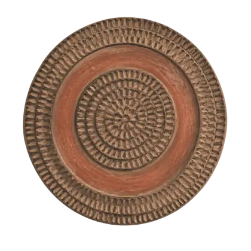

Autoría: Jesica Fortes Regalado, Gloria Elsa González Martín y Cristian García Santana. Créditos y fuentes
Sin registroA tu ritmo
Reconstruye el mapa · opcional
Abrir el puzle del archipiélago
Reconstruye el mapa observando sus formas y colores. Arrastra una pieza sobre otra o selecciona dos para intercambiarlas. Puedes utilizar «Mostrar solución» como apoyo.
Selecciona dos piezas para intercambiarlas.
2. Tu pasaporte de pintaderas
Aquí aparecen automáticamente las insignias conseguidas. También puedes abrir el pasaporte desde la barra superior en cualquier momento. El progreso se guarda únicamente en este navegador.
¿Qué reconoce la pintadera? En «Infantil y 1.º ciclo» se obtiene al superar la comprensión; en las demás etapas, al superar la comprensión y el reto de verdadero o falso. La insignia reconoce esos retos. Para completar el itinerario, realiza también las actividades de investigación y creación que te indique tu docente.
Cómo se aprende y qué se revisa
Retos automáticos: comprende el cuento y completa el verdadero/falso cuando lo pide tu etapa; entonces aparece la pintadera.
Tareas abiertas: investiga una fuente y crea una producción propia con los apoyos que necesites.
Revisión docente: explica qué sabes, qué es incierto y qué has inventado. Tu docente revisa las evidencias acordadas; la pintadera por sí sola no es una calificación.
Las pintaderas del pasaporte son símbolos gráficos. No representan una pintadera arqueológica propia de cada isla ni indican que estos objetos tuvieran la misma presencia en todo el archipiélago.
Ruta acordada revisada
No necesitas reunir las ocho pintaderas para cerrar el trabajo acordado.
Elige una ruta
3. Gran reto: conecta las ocho islas
Reúne las ocho pintaderas para desbloquear el gran reto y el diploma.
Gran reto desbloqueado
¿A qué isla pertenece cada huella?
Relaciona cada pista con su isla. Todas las leyendas forman parte de una misma expedición.
Retos del pasaporte superados
Las ocho pintaderas protegen ya tu pasaporte
Escribe un nombre o el nombre del equipo para preparar el diploma. Este dato queda solo en el navegador.
Ahora, vuelve a narrar una historia del MitoMapa
En equipo, creen una locución, un pequeño teatro, un kamishibai, un cómic o una secuencia ilustrada.
Debe incluir
Pregunta de control
Isla y lugar
¿Podemos situarlos en el mapa?
Personajes y conflicto
¿Reconocemos el mito o la leyenda?
Estribillo
¿Puede repetirlo el público?
Recreación propia
¿Explicamos qué hemos añadido?
Accesibilidad y créditos
¿Se comprende sin sonido y se citan las imágenes?
Tu opinión cuenta
¿Cómo ha sido tu expedición?
Puedes valorar el recurso después de una o varias rutas. Tus respuestas no cambian las pintaderas ni las calificaciones. No escribas nombres ni datos personales.
Elige de 1 (muy poco) a 5 (mucho), o «No puedo valorarlo». La respuesta queda en pantalla hasta que descargues una copia; no se envía automáticamente.
Si quieres ayudarnos a mejorar MitoMapa, puedes enviar tu valoración a sugerencias.mitomapacanario@gmail.com. Descarga el archivo y adjúntalo al mensaje. Si eres alumno o alumna, pide ayuda a tu docente o a tu familia.
El enlace abre tu programa de correo; adjunta manualmente el archivo descargado y envía el mensaje.
Guía breve, autoría y fuentes
Aplicación multinivel: el profesorado concreta el anclaje curricular, las tareas y los apoyos. Elige una isla en una sesión de unos 45 minutos, dos islas en cuatro sesiones de unos 50 minutos o el banco completo opcional en ocho a diez sesiones de 35–50 minutos. Una ruta acordada puede terminar con dos islas revisadas de dos, con independencia de la colección de ocho pintaderas. Consulta las orientaciones en Docente.
Autoría: Jesica Fortes Regalado; Gloria Elsa González Martín; Cristian García Santana. Narración: Jesica Fortes Regalado. Las grabaciones se reproducen al pulsar Reproducir; puedes elegir voz sola o una entrada suave de percusión y naturaleza recreadas. Créditos del audio. Mapa: imagen de relieve aportada por la autoría; procedencia indicada: TongApp del Gobierno de Canarias. Se conserva la imagen del archivo recibido. Archivo SVG aportado. El aviso de TongApp facilitado por la autoría declara la titularidad del Gobierno de Canarias y el libre uso por la comunidad educativa. El mapa conserva esas condiciones originales; no se le atribuye la licencia de los materiales propios del proyecto. Ilustraciones: ocho escenas y diez pintaderas generadas para el recurso. Herramienta consignada originalmente: OpenAI ImageGen; asistente indicado por la autoría: Astra 6. Son recreaciones contemporáneas. Las pintaderas se inspiran en el documento indicado de El Museo Canario; no representan una pieza arqueológica propia de cada isla. Licencia de los materiales propios:CC BY-SA 4.0.
Para preparar una sesión, consulta la guía docente. La guía de reutilización indica cómo relacionar las actividades con criterios curriculares concretos de cada etapa. Esa correspondencia requiere selección y revisión docente antes de un uso institucional.
Criterio editorial: la tradición documentada, las preguntas de investigación y la recreación literaria aparecen diferenciadas. Los cuentos son originales, están ambientados con intención didáctica y no sustituyen a las fuentes históricas o arqueológicas.
Agradecimientos
Se agradece la colaboración de las personas consultadas sobre aspectos históricos, técnicos y didácticos durante la elaboración y revisión de MitoMapa canario. Sus observaciones y sugerencias han contribuido a revisar y mejorar los contenidos, el funcionamiento y las propuestas de aprendizaje del recurso.
Fuentes y fundamentación del recurso
Artículo y propuesta didáctica facilitados por la autoría.
Decreto 196/2022, de 13 de octubre, sobre la ordenación y el currículo de Educación Infantil en Canarias.
Decreto 211/2022, sobre la ordenación y el currículo de Educación Primaria en Canarias.
Decreto 30/2023, de 16 de marzo, sobre la ordenación y el currículo de ESO y Bachillerato en Canarias.
Espinosa (1594), Del Arco y Navarro (1987) y León Barreto (1995), según la bibliografía desarrollada en el artículo base.
Materiales patrimoniales del CACT Lanzarote y documentación sobre pintaderas de El Museo Canario.
Las fuentes específicas y los enlaces de consulta de cada tema se ofrecen en el apartado Investiga de su ruta. Conviene comprobar la vigencia y la accesibilidad de los enlaces antes de una publicación académica definitiva.

Un recurso para compartir y adaptar
Descarga y reutiliza este REA
Puedes conservar, copiar, adaptar y compartir este recurso con atribución, también con fines comerciales y manteniendo la licencia CC BY-SA 4.0. Indica los cambios que hagas. La licencia se aplica a los materiales propios sobre los que la autoría dispone de derechos; las fuentes externas enlazadas conservan sus condiciones.
ELPX · Multinivel y ejemplo GobCan · revisión 20/10/2026
Editar en eXeLearning
Incluye los cuentos, las actividades nativas, las narraciones y la guía docente en cajas desplegables. La web se ofrece como recurso adicional mediante un enlace final, sin embeberla. Ofrece orientaciones multinivel y un ejemplo GobCan de cuatro sesiones con dos islas. El profesorado concreta el anclaje curricular. Se abre en eXeLearning 4.0.5.
Esencial e Intermedio corresponden a la edición anterior, de 15 páginas y 95 iDevices; no incluyen la adaptación GobCan. Conservan sus actividades y ajustan el informe a dos selecciones: las restantes quedan como opcionales. El pasaporte sigue siendo manual y las producciones requieren revisión.
Materiales de la edición GobCan revisada el 09/10/2026. La pauta cualitativa recoge evidencias, avances y un siguiente paso sin puntuaciones ni pesos. Acuerda las tareas con tu docente y utiliza solo los criterios trabajados. Puedes imprimirlas desde el navegador o adaptar una copia.
La web 4.8.0 ofrece la adaptación GobCan del REA 4.8.1, preparada para eXeLearning 4.0.5: 34 páginas y 118 iDevices, incluidos los 95 de la edición base y sus 42 juegos, con 16 MP3. Incluye los cuentos y las actividades nativas editables, la guía docente en cajas desplegables y las fuentes reunidas por apartados. La web mantiene su mapa con pintaderas y sus juegos, y se enlaza al final del ELPX como un recurso adicional independiente. El ejemplo curricular de tercer ciclo de Primaria trabaja dos islas en cuatro sesiones; la propuesta multinivel permite que cada docente concrete su itinerario y anclaje curricular. El pasaporte nativo se revisa manualmente; la web tiene seguimiento propio y no se sincroniza con el ELPX. Las descargas no incluyen respuestas ni datos del alumnado.
Historia, imágenes y fuentes
Una imagen no prueba cómo fue el pasado
Las escenas creadas con IA acompañan cuentos originales; el mapa de relieve procede del archivo aportado por la autoría, cuya fuente indicada es TongApp del Gobierno de Canarias. Su aspecto realista no demuestra que la ropa, los objetos, los rostros, los edificios o las acciones representadas fueran así. Tampoco son retratos de personas históricas ni reproducciones exactas del paisaje.
Para conocer el pasado combinamos y contrastamos fuentes. Muchas noticias sobre nombres y creencias nos llegan por crónicas y otros escritos, a menudo posteriores a la conquista y condicionados por la perspectiva de sus autores. La arqueología estudia restos materiales; la tradición oral conserva relatos y versiones. Ninguna ilustración inventada sustituye a esas fuentes.
Testimonio escrito: ¿quién lo escribió, cuándo y con qué propósito?
Resto arqueológico: ¿qué objeto o contexto se ha estudiado y qué interpretación permite?
Tradición oral: ¿quién contó el relato, dónde y qué variantes conocemos?
Ficción del recurso: personajes, diálogos y escenas inventados para leer y crear.
Primaria: observa una ilustración y di dos cosas que ves. Elige un detalle que no podamos conocer solo por la imagen. Con ayuda de tu docente, consulta una fuente del recurso y completa: «En la imagen veo…; la fuente explica…; todavía no sabemos…».
Secundaria: elige un detalle, formula una pregunta y contrasta una fuente escrita con una fuente arqueológica o un estudio especializado pertinente. Anota autoría, fecha, enlace y qué respalda cada fuente. Distingue dato, interpretación y recreación. Revisa quién actúa, quién queda en segundo plano y qué edades o tareas faltan: ¿hay estereotipos de género, edad o apariencia? Propón una corrección razonada. Si falta evidencia, declara la incertidumbre.
Revisión con el docente: identifica las fuentes, justifica qué permiten afirmar, reconoce lo que no se sabe y explica la mejora propuesta. Se realiza oralmente o en el cuaderno. No es un nuevo requisito automático para obtener una pintadera.
Consultar los nombres históricos y sus fuentes
Nombres de las islas y lectura de las fuentes
Los nombres actuales identifican las rutas. Las denominaciones históricas no son del todo fiables como transcripciones exactas de las lenguas indígenas: sus grafías, su alcance y su interpretación pueden variar, y no tienen el mismo respaldo documental. Según la información aportada por la autoría, esta selección se ha consultado con especialistas en la época prehispánica de Canarias; esa consulta no elimina las incertidumbres. No constituye una lista de ocho nombres indígenas seguros ni propone traducciones literales.
Denominaciones históricas: qué podemos afirmar en este recurso
Isla actual
Denominación y cautela
Tenerife
Achinech es la forma elegida para el juego. La tradición historiográfica también transmite variantes como Chineche y Achineche.
Gran Canaria
Canaria es una denominación histórica. No se presenta Tamarán como nombre indígena documentado ni se atribuye a Canaria una etimología indígena segura.
La Palma
Benahoare: nombre transmitido por las fuentes históricas.
La Gomera
Gomara: forma aportada por la autoría tras la consulta a especialistas. Se distingue de la entrada Gomera de la bibliografía enlazada; no se presenta como denominación unánimemente aceptada.
El Hierro
Esero o Eceró: formas aportadas para el juego. La bibliografía enlazada recoge Esero; no se atribuye automáticamente ese mismo respaldo a Eceró.
Fuerteventura
Erbania: denominación recogida en Le Canarien; se presenta con referencia a esa fuente.
Lanzarote
Tyterogaka: forma recogida en Le Canarien; existen variantes de transcripción.
La Graciosa
No se incorpora un nombre indígena: esta revisión no ha establecido una denominación documentada con suficiente respaldo.
Criterio de revisión: la elección de bimbapes se apoya en estudios filológicos de la tradición oral de El Hierro; no se afirma que exista unanimidad ni una recomendación institucional que no se haya documentado. El episodio de la cruz en Mafasca no se utiliza para fechar toda la leyenda. Las fuentes escritas y arqueológicas se contrastan, sin convertir unas en sustitutas de las otras.